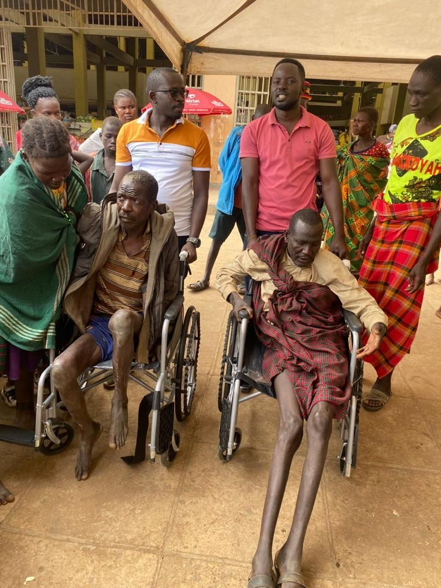
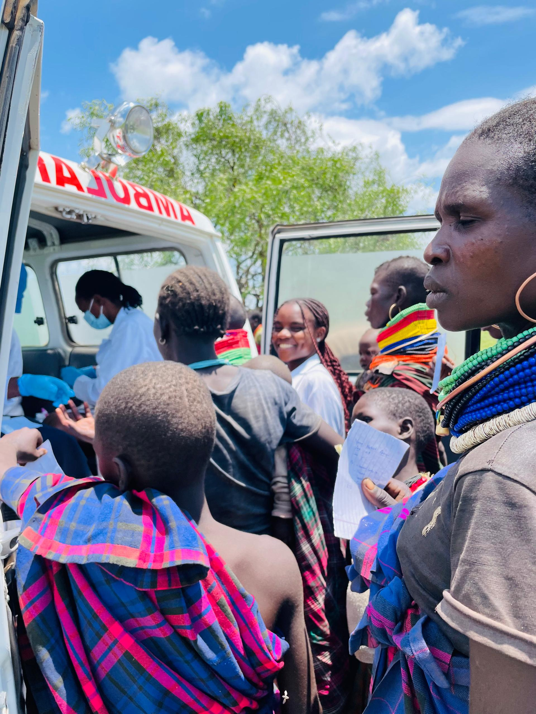

Education for All: Empowering Uganda's Future
We are working hard to ensure that every child in Uganda has access to quality education...

Disability Support: Breaking Barriers
Tackling the challenges faced by persons with disabilities is at the heart of our mission...

Health and Wellness: A Community Approach
Our health initiatives are changing the lives of many through community-driven programs...